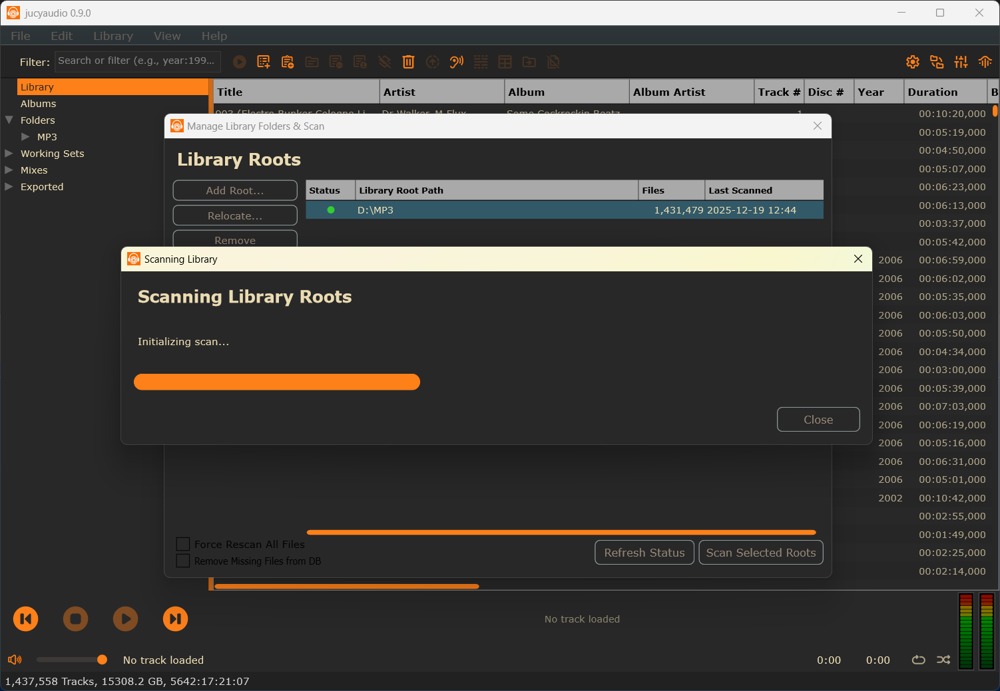
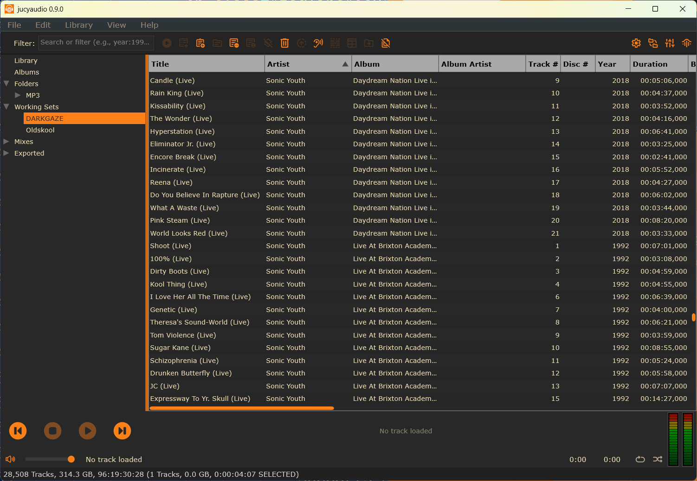
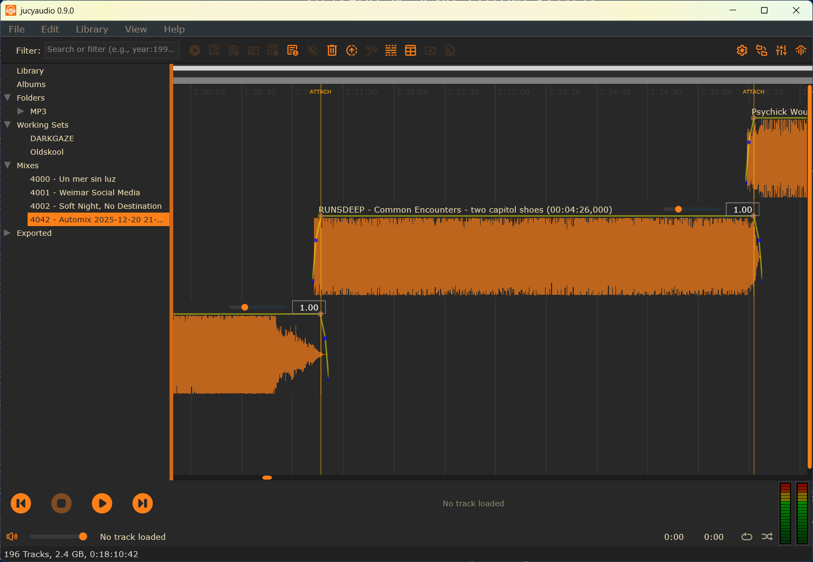
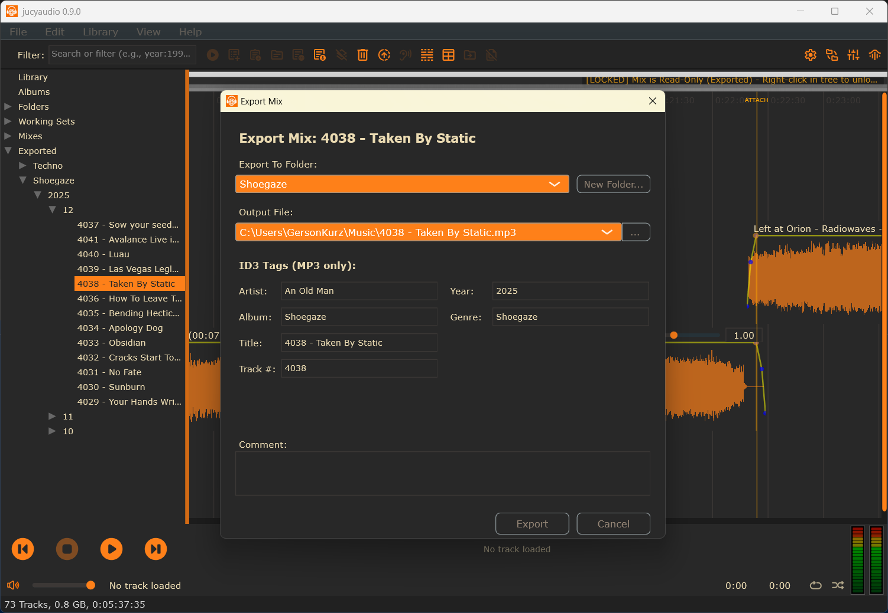

JucyAudio
Audio Player, Mix Editor & Library Manager
An open-source application for macOS and Windows. Built for music enthusiasts, DJs, and anyone with a large local digital audio collection who needs sophisticated tools to manage, curate, and mix their music.
How It Works
Add & Scan Folders
Point JucyAudio at your music folders. The app scans your collection, extracting metadata, detecting BPM, and building a fast, searchable database. Supports MP3, FLAC, WAV, and more.

Create Working Sets
Organize tracks into flexible "Working Sets" - temporary collections for evaluating music, planning sets, or grouping tracks by mood, genre, or project. Your library stays untouched.

Create Mixes
Drag tracks onto the visual timeline editor. Arrange, set cue points, adjust crossfades, and fine-tune transitions. Add EQ and reverb effects with built-in presets. See your mix take shape with waveform visualization.

Export Mixes
Export your finished mixes to high-quality MP3 or WAV. Organize exports into folders by category. Exported mixes are automatically protected from accidental edits while remaining accessible for playback.

Features
Fast Library Navigation
In-memory caching for instant folder browsing, even with massive collections.
Automatic BPM Detection
Background analysis detects tempo for all your tracks.
Waveform Display
Visual waveforms with cue point markers for precise editing.
Built-in Effects
Equalizer and reverb with saveable presets.
Multiple Themes
Dark and light themes in multiple color schemes.
Automatic Backups
Your database is automatically backed up weekly.
Download
Or build from source - it's open source (GPL).